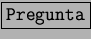
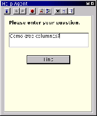
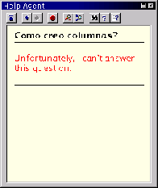

Next: Configuración
Up: El ayudante
Previous: El ayudante
Índice General
El ayudante presenta su propia barra, con botones muy útiles. Salvo
quizá el botón , que no siempre sabe responder, como
se ve en las figuras 5.25 y
5.26 (se presenta la pregunta realizada
y la contestación obtenida).
Figura 5.25:
Uno puede preguntarle al Ayudante que necesita
|

|
Figura 5.26:
A veces el Ayudante no sabe qué decir
|

|
Proyecto Cursos - LuCAS - http://lucas.hispalinux.es/htmls/cursos.html